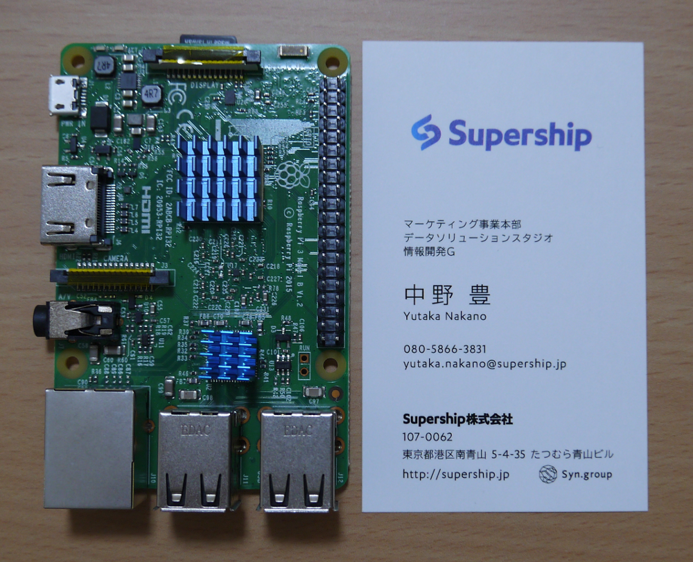
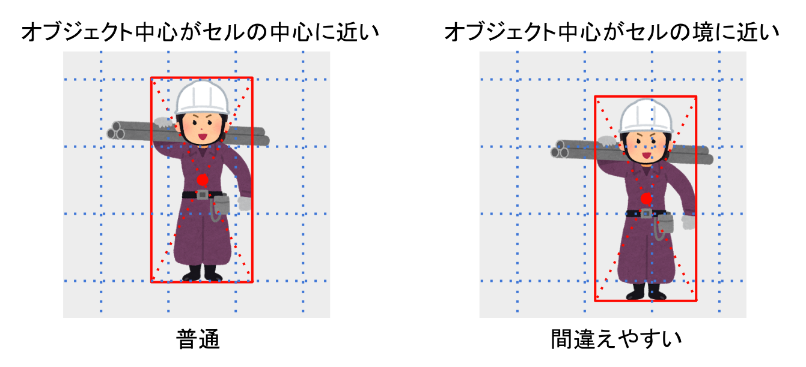
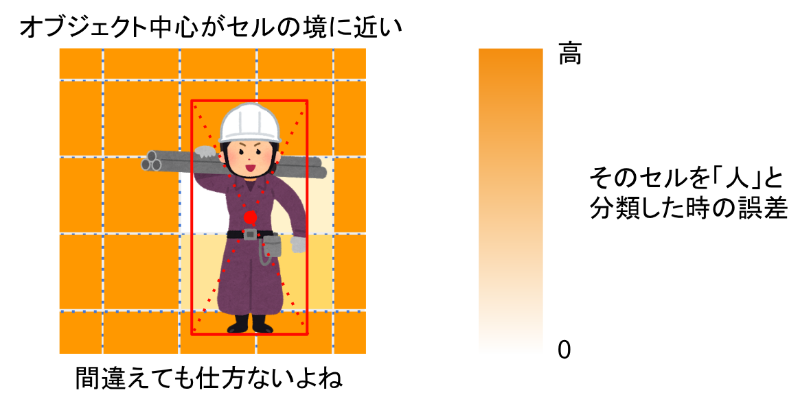
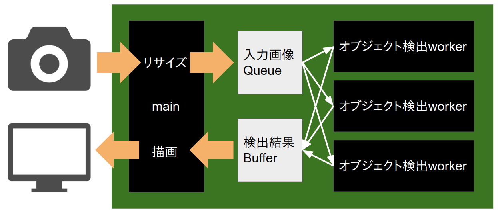
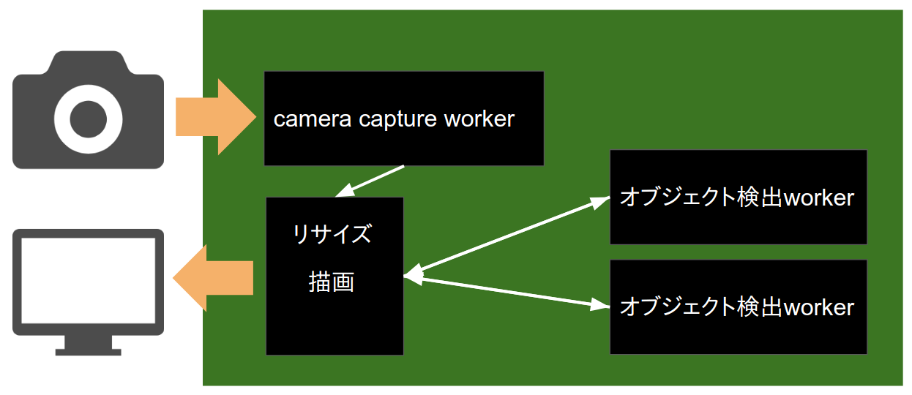

Object Detection For
IoT And Embedded Devices
ざっくり言うと
ラズパイのCPUでも準リアルタイムでObject Detectionを行えるCNN物体検出器を作ろうと試行錯誤してる話
デモ
- ノートPCで著作権フリーの動画を再生
- PCの画面をUSB Webカメラで撮影
- ラズパイで物体検出
- ラズパイに繋いだディスプレイに結果描画
3物体検出(高FPS版): 4.3FPS
赤=乗り物,
緑=動物,
青=人
現状
- それなりに動いている
- ちょっと精度悪いよね。。
- 言い訳: 原因の一部は安物Webカメラ
- 動体を撮すと残像がひどい
- 場面によっては白飛び・黒つぶれ
- ピントが合わずボケている
どうやって作ったのか説明
の前に
ラズパイって何?
Raspberry Pi 3 Model B
- Linuxが動くシングルボードコンピュータ
- CPU ARMv8 4Core, Memory 1GB

こんなCPUで大丈夫か?
大丈夫なわけない
とにかく軽量化しないと...
軽量化のためのモデル選択
YOLOをベースに作ることにした
- RCNN系
- SSD
- パラメータを削ったら成立しなくなりそう
- 複雑で実装できる自信がなかった
- YOLO
- パラメータを削っても成立しそう
- 実装できそうと思った(v1なら)
今回作ったやつのCNN部
- MobileNet + leaky_relu
- フィルタ数をn/32に変更
- chainerで実装
サイズ比較
| モデル | npzサイズ | パラメータ数 |
|---|
| YOLO v3 | 218MB | 61626049 |
| ResNet-50 | 91MB | 25557096 |
| MobileNet(n=32) | 7.2MB | 3182352 |
| 今回の3物体検出(n=6) | 366KB | 87316 |
| 今回の顔検出(n=3) | 132KB | 25092 |
学習データ
- Pascal VOC 2007trainval + 2012trainval
- 顔検出: "head"を含む全画像 + 含まない画像中2%
- 3物体検出: 全画像を使い、オブジェクトをグループ化
例: catもdogもhorseも全て"animal"として1ラベルに
- データ拡張: 左右反転、ランダムクロップ
セルの分類を難しくする要素
- オブジェクトのないセルが大多数
=>誤差計算時、オブジェクトなしの重みを下げる
- オブジェクト中心がセル境目だと分類困難

セル境目問題への対処
難しい分類は誤差の重みを下げる
=>難しい問題を無理に学習しようとして全体の性能が落ちるのを防止

採用を見送ったネットワーク構造
-
Residual Connection
- 計算グラフ分岐はキャッシュの小さいCPUに不向き
- 精度はほぼ変わらなかった
- (分類問題だけならMobileNetにResidual Connection追加は精度上がった)
-
ShuffleNet/MobileNetV2
採用を見送った学習手法
-
転移学習
- Tiny ImageNetの一部クラスの分類を事前学習
- 精度が落ちた
-
Focal Loss
- 分類の難しい問題への誤差を大きくする誤差関数
- 途中で発散。実装間違い? モデルの表現力不足?
-
Overwrapping Grid
- Lossが下がらない
- 重複部に全然違う予測が出た時どうするか
デモのシステム構成(高FPS版)

- worker processで分散処理し、CPUを使い切る
- 検出結果をバッファし、撮影時刻でソートして描画
デモのシステム構成(低遅延版)

- 専用プロセスで確実に最新フレームを取得/描画
- 検出完了が遅れたフレームは描画せず捨てる
- 遅延は減る(1.6=>0.9)がFPSも落ちる(4.3=>3.4)
困っていること
- 精度が! 上がらない!!
- アイデア尽きた
- SSDにも挑戦したいが理解・実装困難